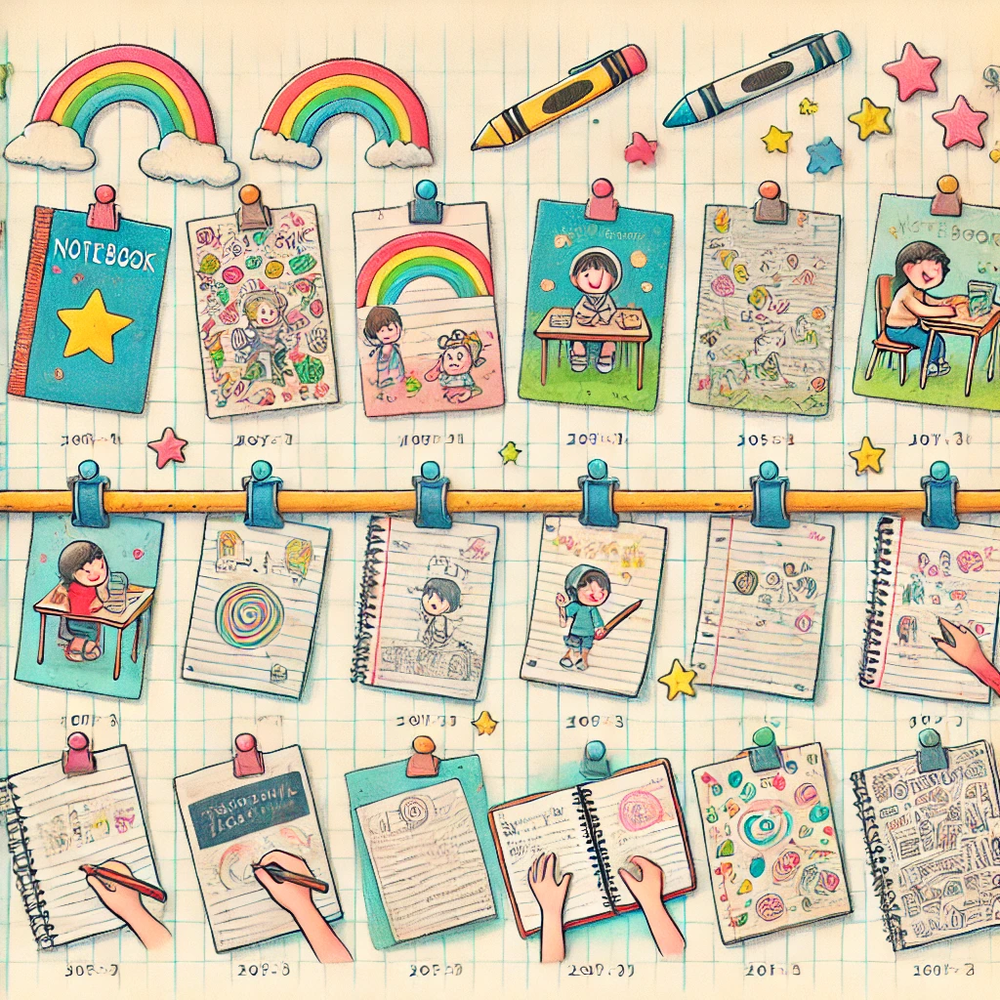
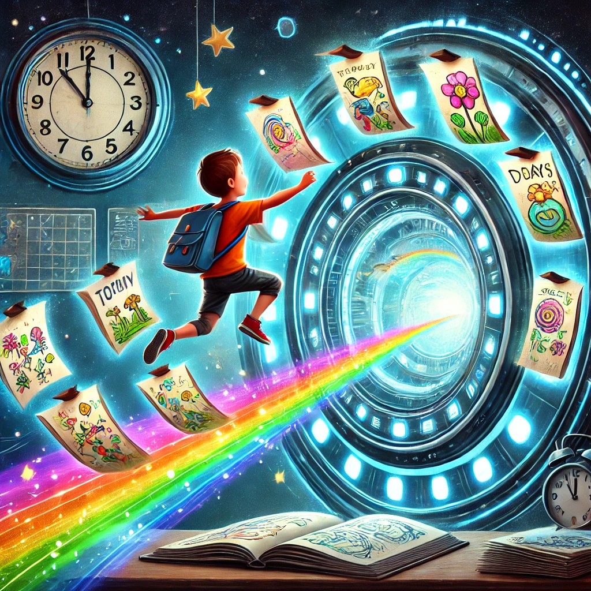

Git Kids
Aprendendo Git com um Caderno Mágico
O que é Git?
Git é como um caderno mágico onde você pode salvar todas as versões dos seus desenhos e trabalhos. Sempre que fizer uma mudança, você pode tirar uma foto e guardar!

Comandos Básicos de Git
git init
Cria um novo caderno mágico para guardar suas mudanças.
git add
Escolhe quais desenhos você quer salvar na próxima foto mágica.
git commit
Tira uma foto do seu trabalho até agora.
git log
Mostra todas as fotos que você já tirou.
git checkout
Permite voltar no tempo para ver versões anteriores.
git branch e git merge
Criar páginas separadas no caderno e misturar diferentes desenhos.
Compartilhando com Amigos
Você pode usar o GitHub para compartilhar seu caderno mágico com amigos, permitindo que eles vejam, comentem e façam mudanças!